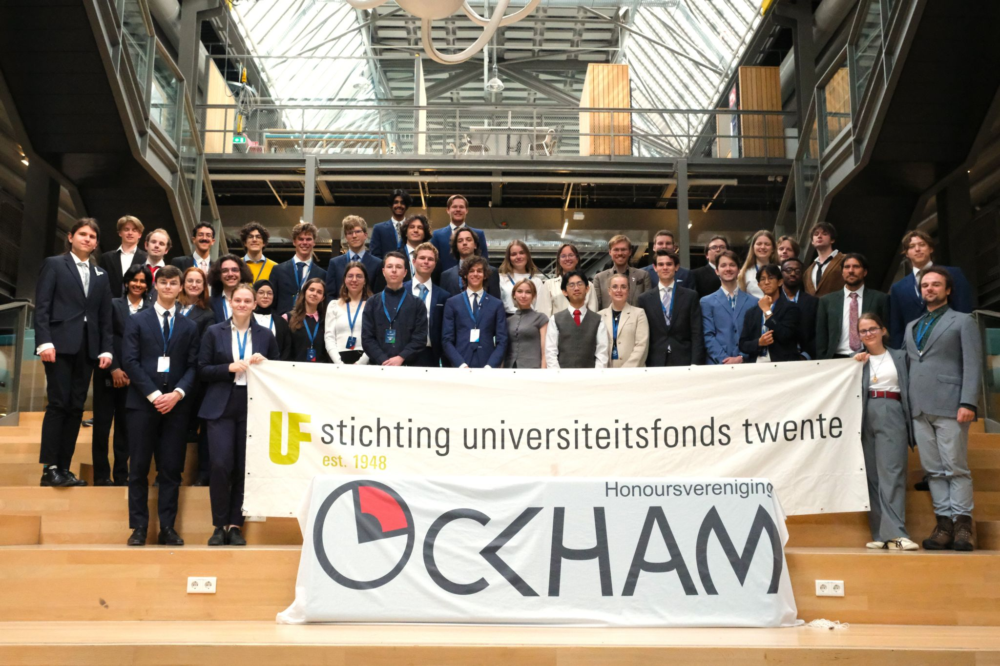
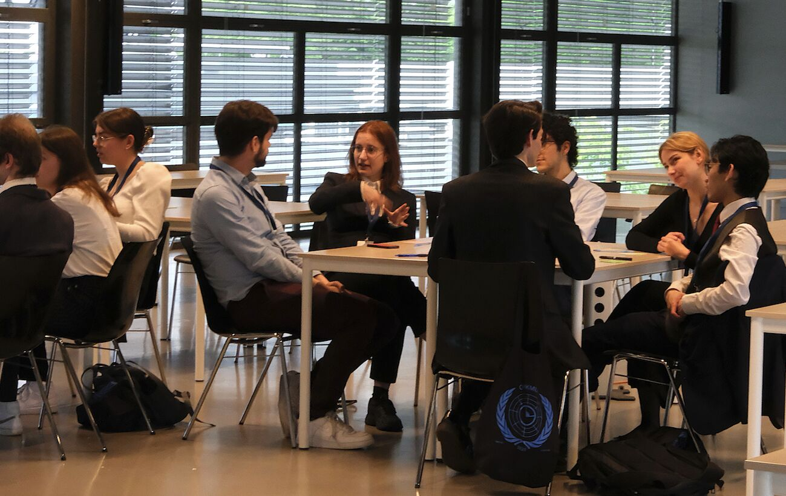
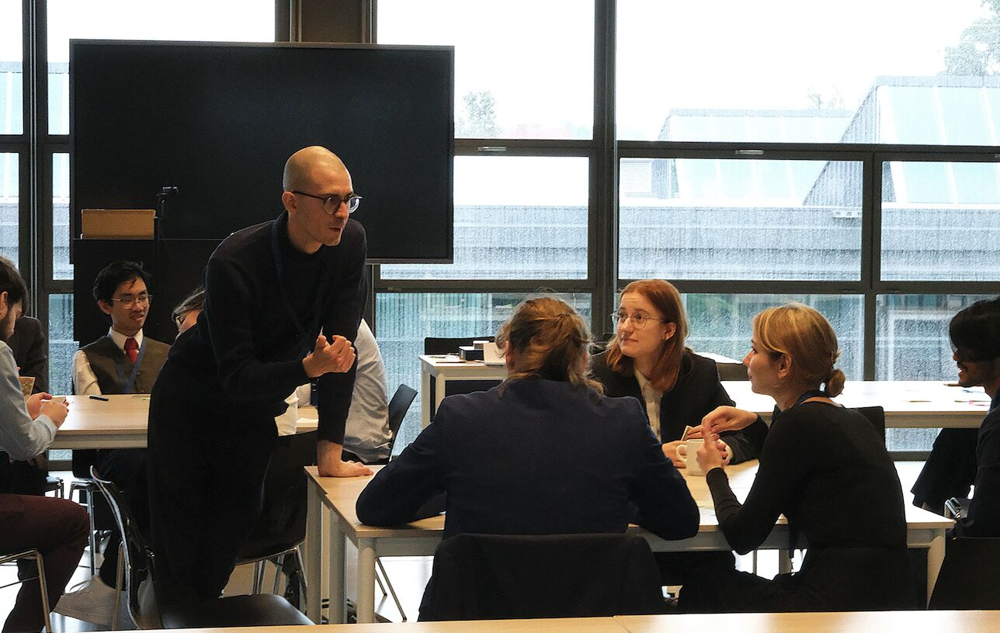
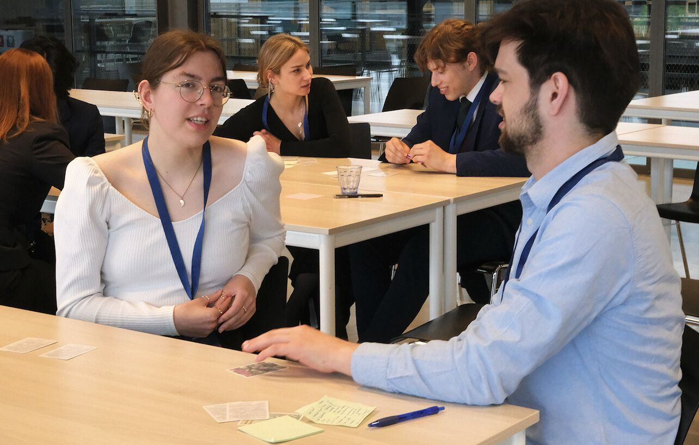

At OckMUN, a two-day Model United Nations hosted by the University of Twente, a Timescaping session invited honours students to think long-term, collaboratively, and beyond immediate positions.
H.V. Ockham, the honours association of the University of Twente, organised OckMUN, a two-day Model United Nations bringing together honours students from universities across the Netherlands.
Honours programmes in the Netherlands bring together highly motivated students in extracurricular, interdisciplinary tracks that complement their Bachelor's or Master's studies. Participants are selected for their academic excellence, curiosity, and capacity for critical and systemic thinking.
OckMUN gathered over 40 honours students from Dutch universities to practise diplomacy, negotiation, and international decision-making — skills that many professionals later draw on in law, government, business, and culture.
The 2025 edition explored the intersection of technology, geopolitics, and time through a speculative but rigorous scenario: scientists have discovered a stable Einstein-Rosen bridge just 0.3 light-hours from Earth. The discovery could enable time travel, but its potential benefits and risks demand unprecedented international technological cooperation.

The Timescaping session involved 12 students and lasted 90 minutes. It was positioned as one of two parallel sessions opening the two-day event, before committee work and formal debate began. The session aimed to prime participants for long-horizon, non-reactive thinking, build trust and cohesion within a newly formed group, and strengthen listening, adaptability, and collective imagination.
Rather than rehearsing arguments, participants were invited to temporarily suspend positions and explore futures together. The session followed a clear and lightweight structure: playful ice-breakers to shift attention and lower social barriers, paired and small-group conversations using calibrating cards, speculative exercises imagining futures from the perspective of 2125, and collective exploration using Timescape cards.
Participants worked with both the standard Timescaping deck and a set of custom-designed cards addressing themes relevant to diplomatic practice, including national identity and the disappearance of borders, future diplomacy, artificial or non-human ambassadors, data sovereignty, and cosmic commons.
The session concluded with participants creating and using their own Timescape cards to continue exploring ideas together.
Preparation included email exchanges and an online meeting with the OckMUN organising team to align the session with the event's goals and thematic focus.
Based on this input, eight additional custom Timescape cards were developed, the session structure was aligned with the rhythm of the two-day United Nations simulation, and the tone was calibrated for an academically strong, highly curious audience.
The design mirrored the function of the event itself — preparing participants not with answers, but with shared orientation and openness.

Participant feedback highlighted the value of stepping out of immediate problem-solving modes. Positioned before 48 hours of negotiation and policy work, the Timescaping session acted as a mental reset, helping participants enter the simulation with greater imaginative flexibility and openness to complexity.

'Letting loose, letting the thoughts flow.'
— OckMUN participant
'The ability to project yourself into the future.'
— OckMUN participant
OckMUN demonstrated that Timescaping works as a primer for high-stakes, position-based work. When participants are asked to suspend certainty and explore together before entering structured debate, they arrive with greater flexibility and less rigidity.
The session also showed that academically rigorous audiences respond well to speculative formats — not despite their analytical training, but because of it. The combination of imaginative distance and intellectual seriousness created space for genuine exploration.
